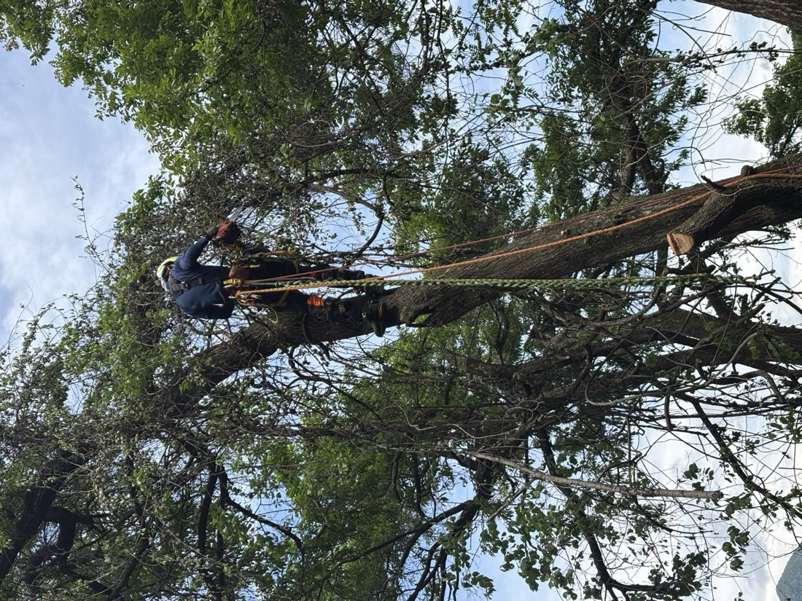
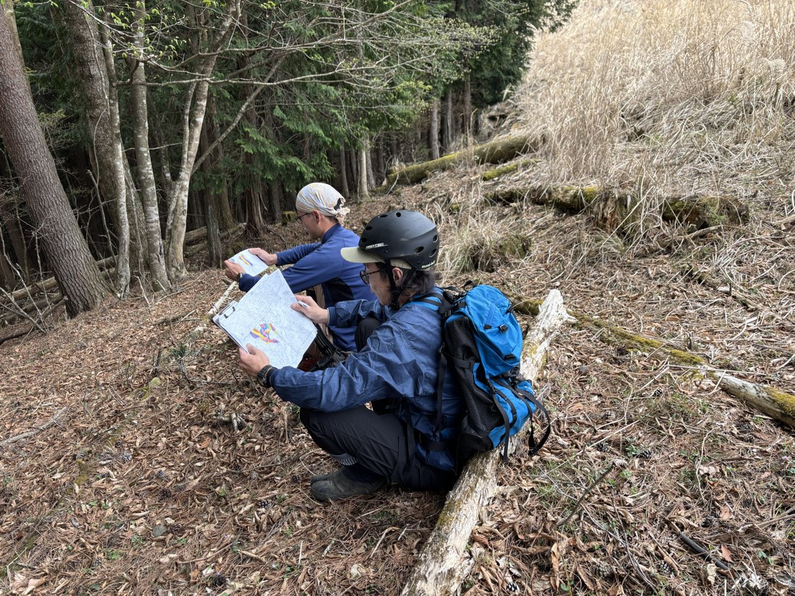

道志村での山仕事
着任以来、南都留森林組合や村内の林業従事者にお世話になり、山仕事のいろはを教わりながら山の課題と向き合う毎日を過ごしています。
山に入って日々感じるのは、誰かの思いの上に立っているという緊張感。これからこの森をどうしていけばいいのか。まさに森をさまようような不安感。不器用だからこそ足を動かして、この不動の山々を動かす原動力になりたい。そんな思いが、日々私を山へと向かわせてくれます。




日本が失ったもの
かつての日本人は貧しくとも、自分たちが手を入れた山々が世代を重ねて豊かになることを信じ、山に向き合っていました。江戸時代には「三方よし」という考え方がありました。売り手よし、買い手よし、世間よし。山仕事も同じく、自らの暮らしを立てつつ、山を守り、未来の世代に豊かさを託す。その営みの中に、真の豊かさがあったはずです。
戦後八十一年が経ち、日本は「自分さえ良ければいい」という価値観に染まってしまいました。明治は「和魂洋才」、昭和は「戦争には負けたが、経済では勝つ」と一致団結し、社会全体が共通の目標に向かっていた。しかし経済的成功がもたらしたのは、皮肉にも精神の衰退でした。洋才だけが残り、和魂は取りこぼされた。豊かさを手にした瞬間、「今だけ、金だけ、自分だけ」へとシフトしていったのではないでしょうか。

なぜ、山へ向かったのか
そんな価値観が蔓延する世の中に、やがて嫌気がさした。会社という檻の中で短期利益を追い求めることに、もう耐えられなくなったのです。
だからこそ、山の世界に飛び込んだ。
結果が見えない仕事。
金にはならない仕事。
でも、確かに必要な仕事。
そこに、失われていた「三方よし」の精神を感じたからです。世代を超えた責任感を、もう一度取り戻したかった。失われた「和魂」を、山仕事という実践を通じて、再び呼び覚ますこと。

絶望の中にある緊張感
この日本精神が、自分たちの世代で息を吹き返すことはないかもしれない。しかし、だからこそ行動が急務なのだと考えます。百年後の森は、今この時点での判断が決定づけるのです。
「今だけ、金だけ、自分だけ」の呪縛を解き放ち、世代を超えた責任を引き受けること。
売り手よし、買い手よし、世間よし。
そして次世代よし。
四番目の「よし」を胸に、山へ。
失われた「和魂」を取り戻し、山の仕事を通じて、次世代へ託すこと。それが次世代へ手渡す最後の礼節だと信じて、今日も山に入ります。